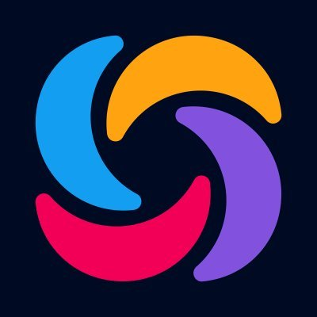

Government-funded AI research
Open to Software Engineering, AI & Computer Vision opportunities
SOFTWARE ENGINEER · AI & COMPUTER VISION ENGINEER
I build practical software with AI and computer vision.
I’m Md. Tawhid Mostafa, a Software Engineer and AI & Computer Vision Engineer based in Bangladesh. My work spans model training and evaluation, backend APIs, web interfaces and production delivery.
Based in Bangladesh
Applied AI · Full-Stack · ResearchCURRENT ROLESoftware Engineer · Allone Softtech Limited
STACK
TensorFlow · React · Django
AI
CV
Labeled physiotherapy videos
Peer-reviewed publication · 2026
PateShaba · Allone Softtech Limited
TensorFlow✦OpenCV✦YOLO✦React✦Next.js✦Django✦Supabase✦Docker✦
TensorFlow✦OpenCV✦YOLO✦React✦Next.js✦Django✦Supabase✦Docker✦
01 · ABOUT
I work across AI, computer vision and full-stack software.
My background combines hands-on software engineering with applied AI research. I enjoy taking a problem from early experimentation to a system people can actually use.
My main focus is applied AI and computer vision, but I also work across the full stack when a product needs it. That includes training and evaluating models, building APIs, connecting databases, designing frontend workflows and preparing applications for deployment.
At Allone Softtech Limited, I develop features for AI Tutors and lead development for PateShaba. Earlier, I worked on a government-funded research project under the Ministry of Science & Technology, Bangladesh, where our team developed an AI-based physiotherapy assessment system using 2D video.
Applied AI
Model training, evaluation and integration into practical applications.
Computer Vision
Image and video analysis with OpenCV, CNNs, 3D CNNs and YOLO.
Full-Stack Systems
React/Next.js frontends, Django/DRF and ASP.NET Core backends, REST APIs and databases.
Research to Software
Taking ideas from datasets and experiments into working software.
02 · EXPERIENCE
Professional experience in software and applied AI.
01
JAN 2026 — PRESENT
Software Engineer
Allone Softtech Limited · Dhaka, Bangladesh
- Build user-facing and admin features for AI Tutors, a SaaS platform built with React and Supabase.
- Lead development of PateShaba, including architecture decisions, module implementation, debugging and end-to-end delivery.
- Design application workflows and data integration between frontend and backend services, with attention to reliability across releases.
ReactSupabaseArchitectureProduct Delivery
02
JUN 2022 — SEP 2025
Artificial Intelligence Engineer
Ministry of Science & Technology, Bangladesh · SRG-222431
- Trained and compared 3D CNN, ConvLSTM and LSTM models to score physiotherapy exercise quality from 2D videos.
- Prepared the 613-video labeled dataset through frame sampling, resizing and normalization as part of a four-member research team.
- Evaluated the models using RMSE and MAD across nine exercises; 3D CNN produced the most accurate and stable results in our experiments.
- Co-authored MobiPhysio, a peer-reviewed dataset paper published in Data in Brief (Elsevier) in 2026.
TensorFlow3D CNNConvLSTMComputer Vision
03 · SELECTED PROJECTS
Selected projects that show how I work.
AI-Monitored Physiotherapy Home Assistant
A web platform for patients, doctors and admins that uses a trained physiotherapy assessment model to score uploaded exercise videos and generate automated reports.
3D CNN selected after benchmarkingReal-time uploaded-video assessment
DjangoTensorFlow/Keras3D CNNBootstrap
View repository ↗
AI Vision Image Analysis Platform
A full-stack object-detection app with Next.js, Django REST, JWT authentication, MySQL and YOLOv8/YOLOv11. It returns annotated images and detection details, with a Gemini-powered assistant for questions about the results.
Next.jsDjango RESTYOLOMySQLDocker
View repository ↗
Online Junior Secondary School Platform
A Django and MySQL school management system for Classes 4–8 with separate admin, teacher and student workflows for assignments, grading, attendance, schedules and notices.
DjangoMySQLAdminTeacherStudent
View repository ↗
04 · RESEARCH & PUBLICATION
Research focused on AI-assisted physiotherapy assessment.
This government-funded project explored how 2D video and deep-learning models could be used to assess and monitor physiotherapy exercises.
Open publication ↗DiB
DATA IN BRIEF · ELSEVIER · 2026
MobiPhysio: A 2D Video Dataset of Physiotherapy Exercises for AI-Driven Assessment and Monitoring
613labeled videos
9exercise evaluations
3DL architectures
4researchers
Dataset curation→Preprocessing→Model training→Evaluation
I contributed to dataset preparation, preprocessing, model training and evaluation. We compared 3D CNN, ConvLSTM and LSTM models and evaluated continuous exercise-quality scores using RMSE and MAD.
05 · TECHNICAL SKILLS
Technologies I use for AI and software development.
AI01
AI / ML / Computer Vision
Model training, evaluation and computer-vision workflows.
TensorFlowKerasOpenCVCNN3D CNNConvLSTMLSTMYOLOv8YOLOv11Model EvaluationRMSE / MAD
WEB02
Web / Backend
Frontend applications, backend services and REST APIs.
ReactNext.jsDjangoDjango RESTASP.NET Core MVCREST APIJWT Auth
DB03
Data / Infrastructure
Databases, version control and containerized development.
MySQLPostgreSQLSQLiteSupabaseDockerDocker ComposeGitGitHub
{ }04
Programming Languages
Languages I use across software development and research.
PythonJavaScriptC#JavaC++
06 · EDUCATION
My academic background in Computer Science & Engineering.
B.SC. · COMPUTER SCIENCE & ENGINEERING
Stamford University Bangladesh
3.70/ 4.00 CGPA
B.Sc. in Computer Science & Engineering, followed by full-time research work in applied AI.
Computer science fundamentals applied through AI research and software development
My degree built the fundamentals I now use in research and software development, supported by additional training in AI, C#/.NET, data, cloud computing and programming.
View all certifications & training ↓07 · CERTIFICATIONS & TRAINING
Certifications and training that support my work.

Certification · 2025
Verify ↗
Foundational C# with Microsoft
Microsoft · March 2025
B
Professional Training · Ongoing
In progress
ASP.NET Core MVC Professional Training
BASIS Institute of Technology & Management (BITM)
AI Training · 2023
Certificate ↗
Artificial Intelligence Training
EDGE Project · BCC & IIT, University of Dhaka · December 2023
21
Advanced Skilling · 2023
Training
21st Century Employability Skilling Program – Advanced
EDGE Project · December 2023
Additional coursework & programming certificates
Coursera · Sololearn
 Foundations: Data, Data, EverywhereCoursera · October 2021↗
Cryptography ICoursera · July 2021↗
Programming for Everybody (Getting Started with Python)Coursera · January 2021↗
Python Data StructuresCoursera · January 2021↗
Foundations: Data, Data, EverywhereCoursera · October 2021↗
Cryptography ICoursera · July 2021↗
Programming for Everybody (Getting Started with Python)Coursera · January 2021↗
Python Data StructuresCoursera · January 2021↗

Python CoreSololearn · December 2020↗Cloud Computing Basics (Cloud 101)Coursera · November 2020↗
HTMLSololearn · October 2019↗
JavaSololearn · July 2019↗
C++Sololearn · June 2019↗
CSololearn · June 2019↗
08 · CONTACT
Interested in working together or discussing research?
I’m open to software engineering and AI/computer vision opportunities, research collaborations, and projects where applied AI can solve a practical problem.
Email me ↗
Dhaka, BangladeshAvailable for remote & on-site opportunities